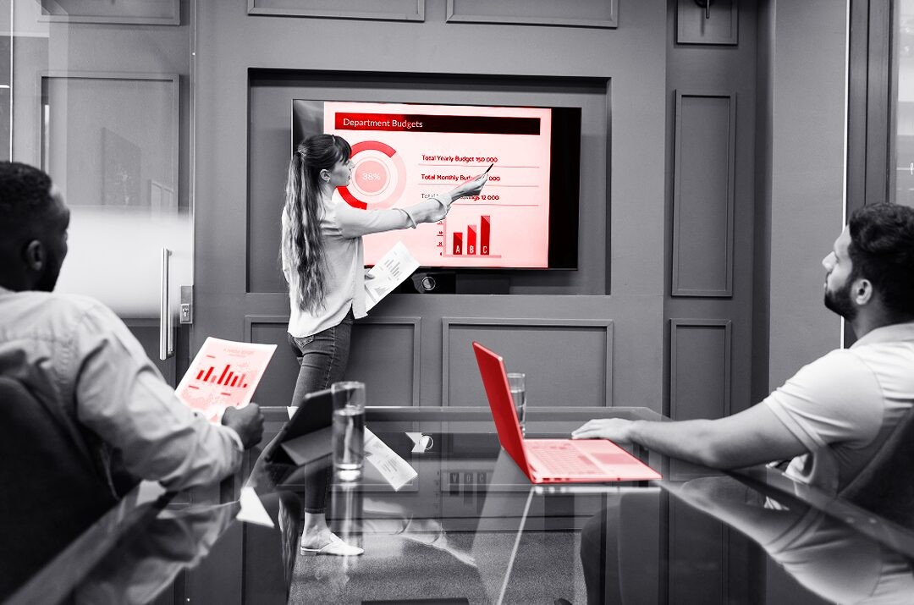

School management software
Elinext built a responsive .NET education platform that replaced routine paper work with tablet and desktop workflows.
Read the case studyProposal for Abhinav Gupta
Sparkrock is growing around ERP, SIS, payments, mobile access, and AI. That growth is good, but it can crowd the product and SaaS ops queue.
Why we're here: Saw Sparkrock is expanding Customer Success. When that team grows, more customer asks, reporting needs, and release pressure reach Product, Engineering, and SaaS Operations.
The signal says Sparkrock is investing in closer customer care. That usually means more feedback from school boards, nonprofits, and human services teams using Sparkrock 365 and mySparkrock. The bottleneck is not product vision. It is turning repeated customer asks into shipped fixes while keeping ERP, mobile, and reporting flows stable. If that work piles up, CSMs carry promises that engineering cannot close fast enough.
Engagement model: a dedicated squad under Sparkrock's Product Owner, with weekly demos and direct backlog access.
Group CSM feedback by Sparkrock 365 flow, tenant risk, and account value, then agree the first sprint slice.
Add automated checks for approvals, expenses, pay access, schedules, and Power BI-connected reporting paths.
Deliver a focused mobile or reporting improvement that CSMs can show in business reviews.
Hand over tests, notes, runbooks, and backlog rules so Sparkrock keeps control after the pilot.
Elinext is a full-cycle software development company, active since 1997, with about 700 in-house specialists and no freelancers. We build web, mobile, enterprise, QA, DevOps, and AI teams for clients across North America and Europe. We hold ISO 9001 and ISO 27001, which matters for ERP work that touches payroll, finance, and customer data. Teams from Siemens, Broadcom, Volkswagen, and TUI have trusted Elinext. For Sparkrock, the fit is a controlled squad that adds speed without taking the roadmap away from your team.
Elinext built a responsive .NET education platform that replaced routine paper work with tablet and desktop workflows.
Read the case study
Elinext added QA automation and DevOps support, helping a web product launch faster with less manual testing load.
Read the case study